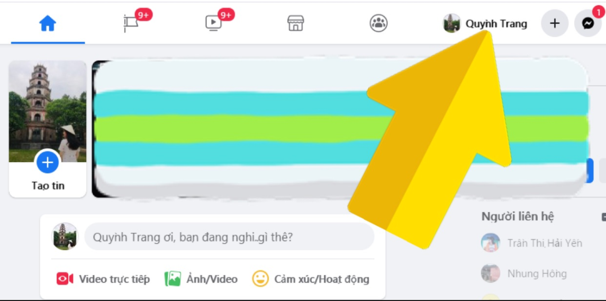
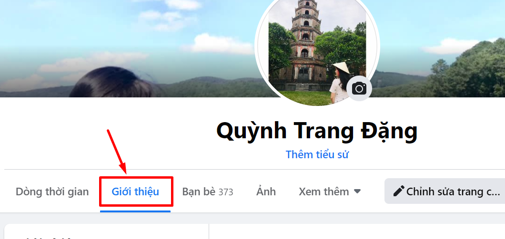
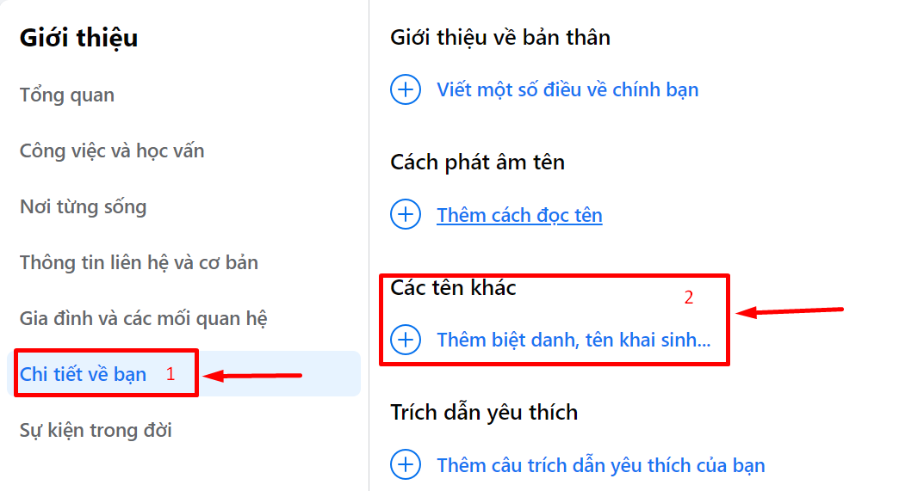
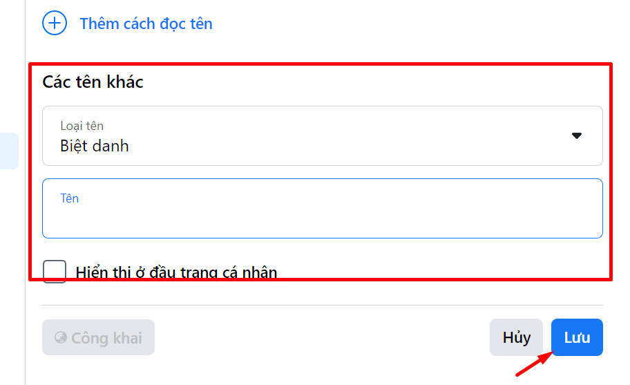
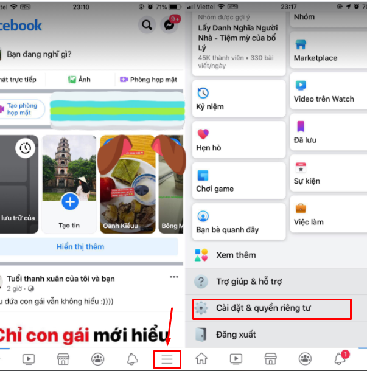
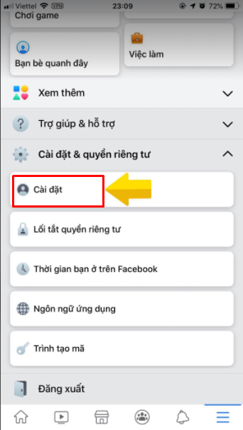
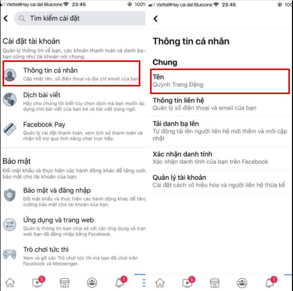
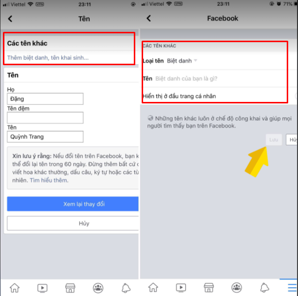

Cách đặt biệt danh trên Facebook bằng điện thoại & máy tính

Ty Nguyen
CEO ❤️ AhaChat. Love babies & chatbot.
Ngoài tên tài khoản Facebook chính thức mà khi lập đều bắt buộc điền thì Facebook còn tạo điều kiện cho người dùng đặt thêm tên biệt danh, tên khai sinh theo ý muốn. Và tên biệt danh thường được đặt trong dấu ngoặc đơn và đặt phía sau tên chính thức. Bài viết dưới đây hướng dẫn bạn cách đặt biệt danh trên Facebook bằng điện thoại và máy tính. Nếu bạn đang gặp thắc mắc trong vấn đề này thì đừng bỏ lỡ nhé!
1. Cách đặt biệt danh trên Facebook bằng máy tính
Các bước thực hiện đặt biệt danh trên Facebook bằng máy tính cũng không quá khó khăn, chỉ cần làm theo các bước hướng dẫn dưới đây chắc chắn bạn sẽ thành công:
Bước 1: Bạn truy cập vào website facebook.com, đăng nhập vào tài khoản Facebook cá nhân mà bạn muốn đặt biệt danh
Bước 2: Sau khi đăng nhập, giao diện trang chủ của tài khoản Facebook cá nhân xuất hiện, bạn trỏ chuột vào hình avatar tài khoản facebook đó để vào giao diện trang cá nhân.
Mẹo: Để biết kích thước hình ảnh chuẩn nhằm tạo ra ảnh bìa hay avatar cá nhân thật đẹp & cuốn hút, bạn đọc có thể tham khảo bài viết này: Kích thước ảnh bìa và ảnh đại diện Facebook chuẩn.

Bước 3: Tại giao diện trang cá nhân, bạn di chuột vào mục Giới thiệu ở phía trên cùng của giao diện.

Bước 4: Lúc này ở giao diện mục Giới thiệu, bạn tìm đến phần Chi tiết về bạn. Tiếp đó bạn bấm vào Thêm biệt danh, tên khai sinh ở mục Các tên khác.

Bước 5: Tại mục Loại tên, bạn chọn loại Biệt danh, còn tại mục Tên, bạn điền tên mà bạn muốn đặt biệt danh cho tài khoản Facebook của bạn.
Nếu bạn muốn hiển thị đầu trang thì bạn tích chọn vào ô Hiển thị ở đầu trang cá nhân. Và theo mặc định, tên biệt danh của bạn sẽ ở chế độ công khai để dễ dàng tìm kiếm. Cuối cùng bạn nhấn Lưu để lưu lại tên biệt danh của bạn.

Như vậy, bên cạnh tên chính thì Facebook còn cho phép bạn đặt thêm tên biệt danh, tên khai sinh,... Và với những tên phụ này, bạn chẳng phải chờ đến 60 ngày mới có thể thay đổi mà bạn muốn thay đổi lúc nào cũng được.
2. Cách đặt biệt danh trên facebook bằng điện thoại
Để đặt biệt danh trên Facebook bằng điện thoại, trước tiên bạn cần phải đăng nhập vào tài khoản Facebook cá nhân muốn đặt biệt danh thông qua ứng dụng Facebook. Sau khi đăng nhập thành công, bạn thực hiện theo các bước hướng dẫn sau:
Bước 1: Tại giao diện trang chủ sau khi đăng nhập vào khoản Facebook cá nhân, bạn bấm chọn biểu tượng 3 gạch ngang ở góc phải phía dưới màn hình. Sau đó, giao diện mới xuất hiện, bạn kéo xuống dưới chọn mục Cài đặt & quyền riêng tư.

Bước 2: Tiếp theo đó bạn bấm chọn vào mục Cài đặt.

Bước 3: Tại giao diện phần Cài đặt, bạn bấm vào mục Thông tin cá nhân và tìm đến mục Chung để đặt biệt danh cho tài khoản Facebook.

Bước 4: Sau khi bấm vào mục Tên, giao diện mới xuất hiện, tại đây bạn bấm chọn vào mục Thêm biệt danh, tên khai sinh,... để đặt biệt danh cho tài khoản Facebook của bạn.
Sau khi đặt tên biệt danh xong, bạn bấm Lưu.

Như vậy là với vài thao cơ bản, bạn đã có thể thoải mái đặt tên biệt danh, tên khai sinh cho tài khoản Facebook của bạn thành công rồi nhé.
Hy vọng với những chia sẻ trong bài viết trên đây đã giúp bạn có thêm những thông tin hữu ích trong quá trình dùng Facebook, đặc biệt biết cách đặt biệt danh trên Facebook bằng máy tính và điện thoại. Nếu có bất kỳ câu hỏi nào cần chúng tôi giải đáp thì đừng quên để lại bình luận ngay bên dưới đây nhé. Chúc bạn thực hiện thành công!